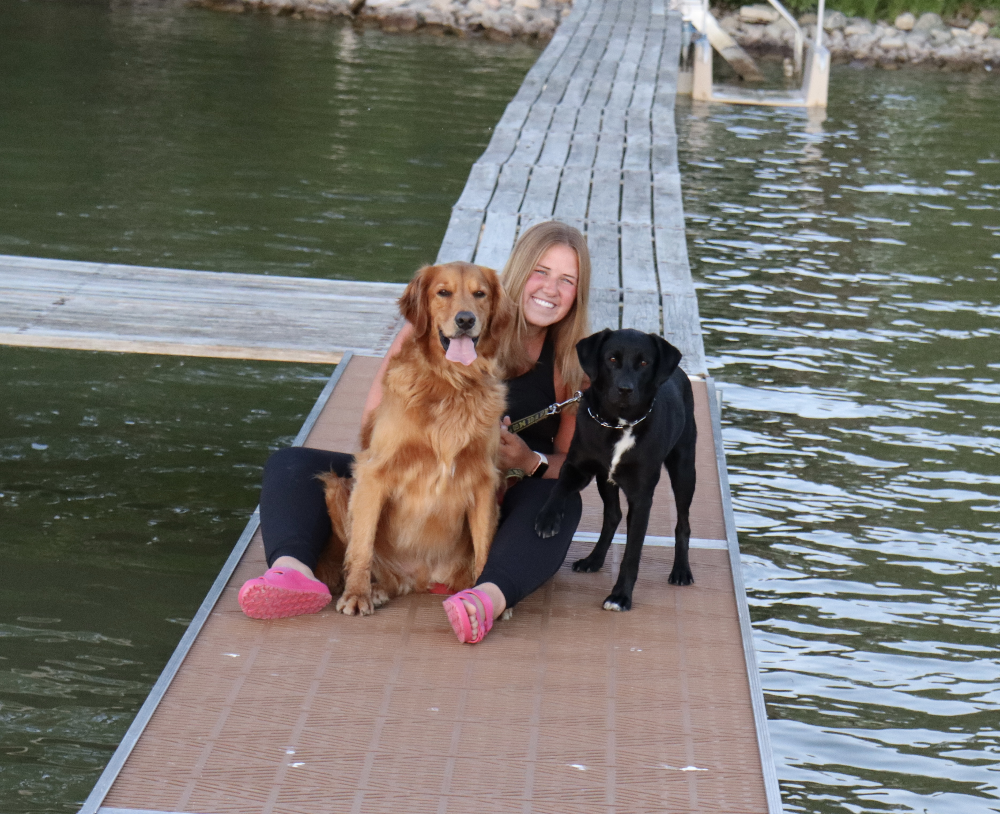

Lillian Schneider
All About Me
Hi! My name is Lillian! I am currently a Junior at the University of Michigan studying Data Science in the College of Engineering. Two of my passions in life are baking and traveling, and I hope that with this website you can get a glimpse into what my experiences with both those passions have been like!!